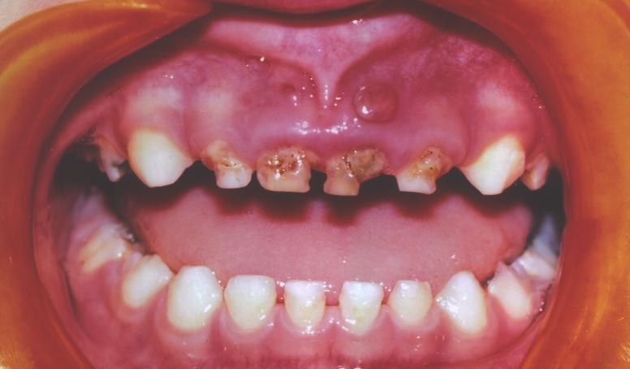
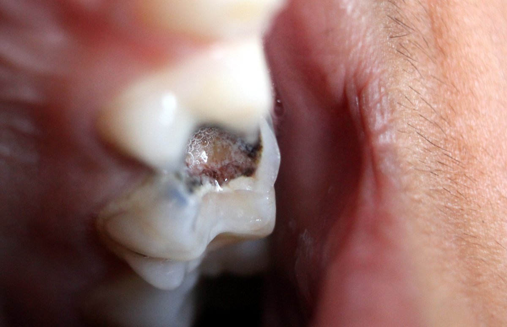
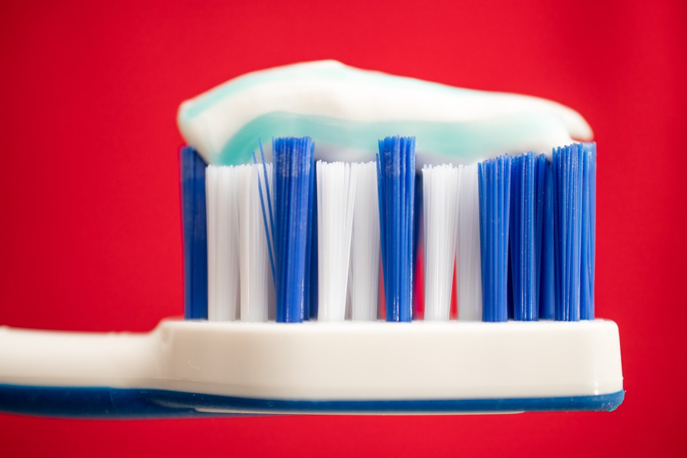
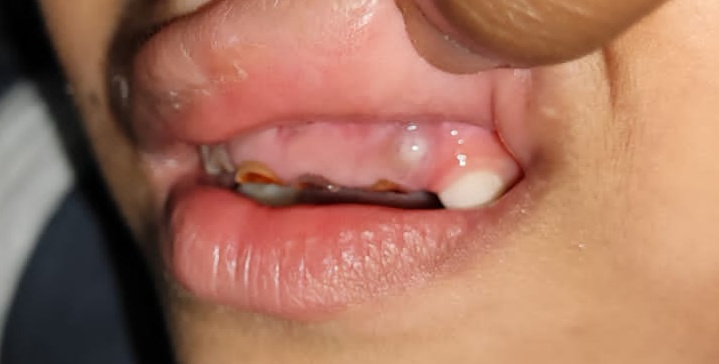
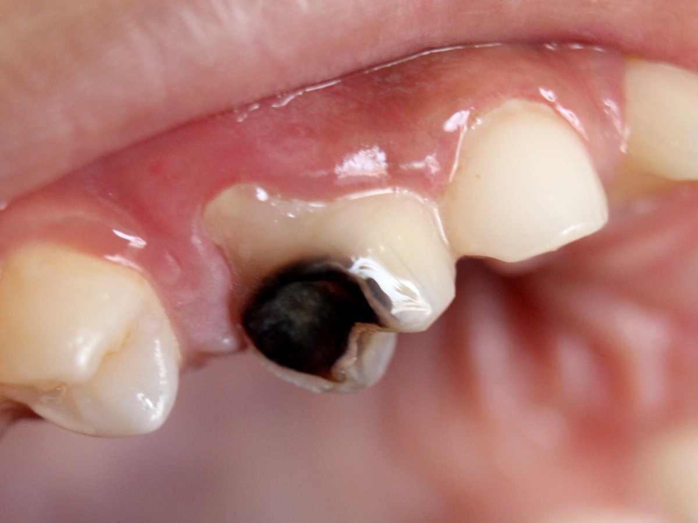
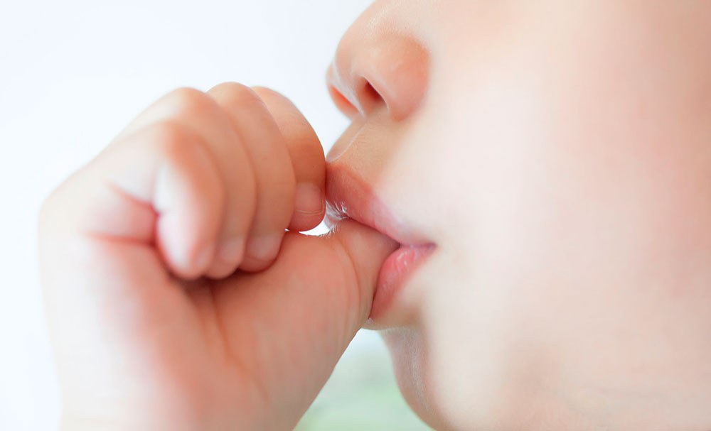
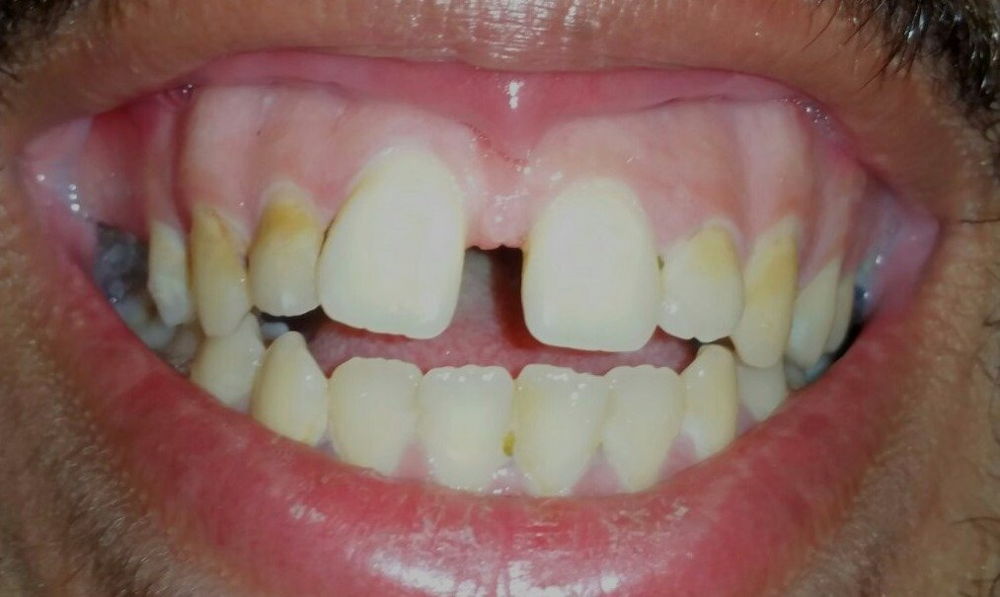
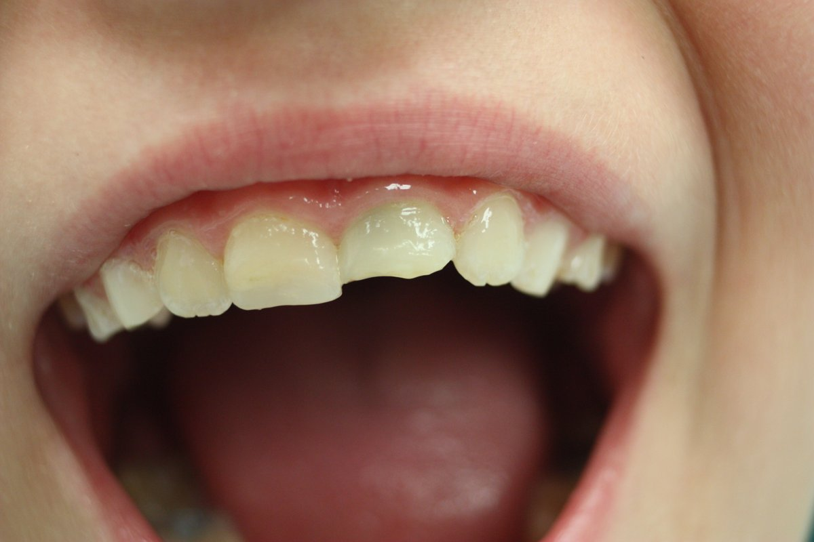
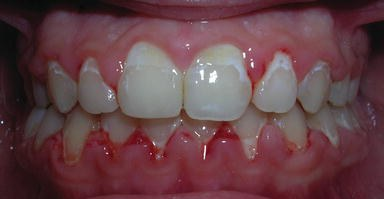
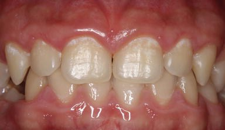

Educación para la salud bucal — niños de 2 a 5 años
Dra. Camila Lorena Guber
HIGA Petrona Villegas de Cordero — San Fernando
5×
La caries es 5 veces más común que el asma en la infancia. Es la enfermedad crónica más frecuente en niños.


IntechOpen · CC BY 3.0 · Wikimedia Commons · CC BY-SA
Gasa o dedal humedecido, 2 veces al día.
Sin pasta o cantidad mínima.
Pasta tamaño grano de arroz.
Cepillado hecho por el adulto.
Pasta tamaño arveja.
El chico participa, pero el adulto repasa hasta los 7-8 años.
La cantidad correcta es mucho menor de la que se ve en las publicidades.
Lo correcto
Grano de arroz (1-3 años) o arveja (3-6 años)

La propaganda
Hasta 5× más de lo necesario
Importante: enseñarle a escupir, no enjuagar. El flúor que queda en la boca sigue protegiendo.
Durante el sueño baja la saliva (que es el escudo natural del esmalte). Si solo se cepilla 1 vez al día, que sea de noche.
Hasta los 7-8 años no tienen destreza motora fina para cepillarse bien solos. Si no lo repasa un adulto, queda mal cepillado.
Cada vez que comemos azúcar, el pH de la boca baja durante 30 a 40 minutos. En ese tiempo, el esmalte se desmineraliza.
Una galletita cada hora durante toda la tarde → boca ácida casi todo el día.
Postre como cierre de la comida → una sola "ventana" ácida, con saliva ayudando.
Yogures infantiles
Jugos saborizados
Galletitas
Cereales
Gomitas
Leches saborizadas
Frutas deshidratadas
Salsas y aderezos
Recomendado entre comidas: agua, fruta entera, lácteos sin azúcar, frutos secos (según edad).
Dejar al chico dormirse con la mamadera (leche, jugo o cualquier líquido azucarado) es una de las principales causas de caries severa antes de los 3 años.
Afecta sobre todo a los incisivos superiores y puede destruir varios dientes en pocos meses.


Fotos: Wikimedia Commons · CC BY-SA 4.0


Hasta los 3 años: es funcional, calma, no preocupa.
De 3 a 4: empezar a retirarlo de a poco.
Después de los 4: puede deformar el paladar y la mordida (mordida abierta anterior).
Cómo sacarlo bien:
Muchos chicos con problemas dentales y de desarrollo facial son, en realidad, respiradores bucales.
Señales de alerta:
Por qué importa:
Derivar a otorrinolaringólogo.

Una línea o mancha blanca cerca de la encía no es estética: es caries en su etapa más temprana.
La buena noticia: en esta etapa, todavía es reversible con flúor profesional y mejoras en la higiene. Si se ignora, se convierte en una cavidad.


IntechOpen · CC BY 3.0
1 año
Con el primer diente, o antes de que cumpla un año. No esperar a los 3 ni a que "duela algo".
El objetivo de las primeras visitas no es curar, sino prevenir, familiarizar y enseñar. Cuanto antes, menos miedo y menos tratamientos.
La caries se previene, no se trata. Cada visita evitada hoy es un tratamiento mañana.
Cepillado nocturno, asistido por el adulto. Innegociable.
Con el azúcar, la frecuencia importa más que la cantidad.
¿Preguntas?